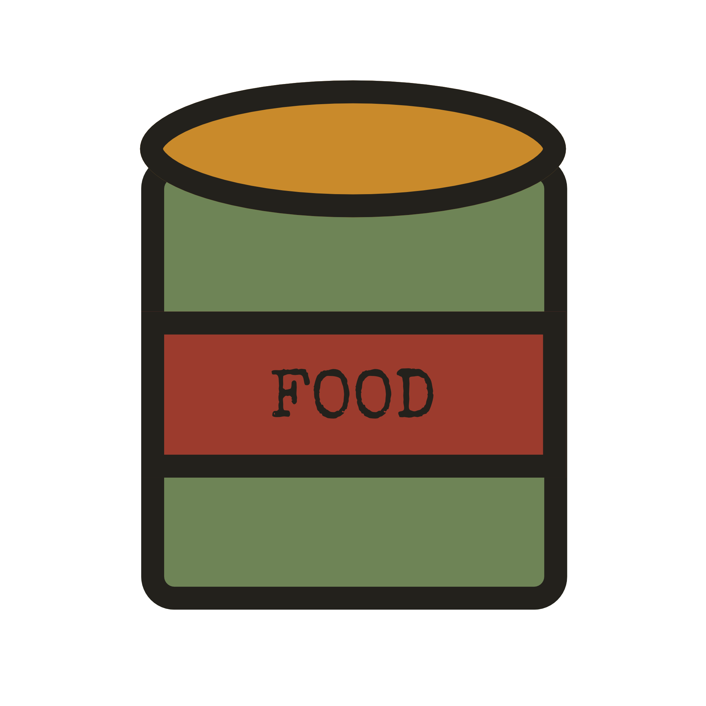
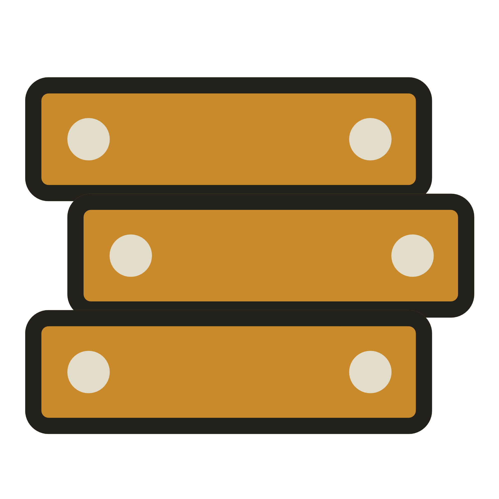
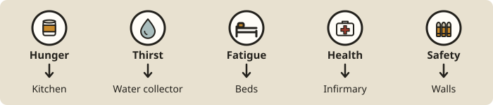
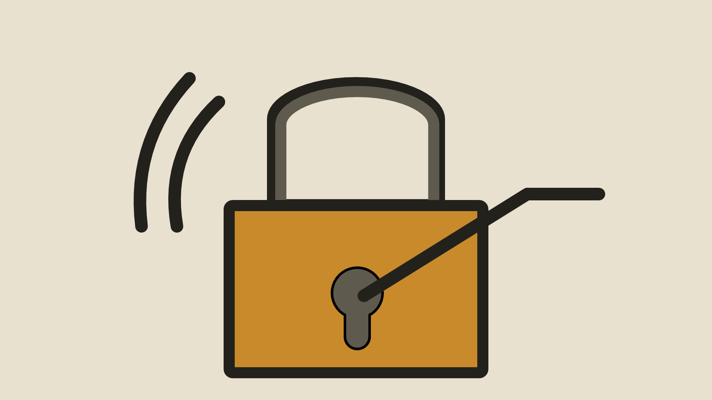
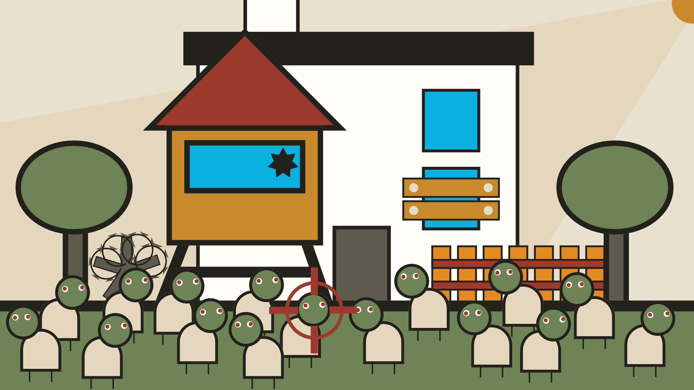

How to play
What is the goal of Another Tally?
The goal of Another Tally is to lead a group of survivors through a zombie apocalypse. You must manage resources, make strategic decisions, and keep your survivors alive as long as possible. Survive until the end to win the game, but can you make it that far?
Please note that Another Tally is a turn-based game, and each turn represents a day in the life of your survivors. You will need to be carefully plan your actions and make the most of each day to ensure the survival of your group.
Additionally, the game only exists in the current browser tab's memory. If you refresh the page, close the tab, or open the game in a new tab, your current run will be lost. Make sure to finish your run before doing any of these actions!
Turns in the game.
-
The Dawn Report
In this window, you'll see the results of the previous night's events.
-
Day
During the day, you can assign survivors to tasks, manage resources, and make strategic decisions to keep your group alive.
-
Dusk
At dusk, the group eats and prepares for the night.
-
Night
During the night, survivors rest and may face dangers or events.
Resources
-

Food
All survivors need food to survive, be sure to have a steady supply. -
 Water
Water
Water is probably the most important resource for survival, you need a steady supply. -

Materials
In order to build and upgrade facilities, you will need to supply materials. -
 Medicine
Medicine
Medicine can heal injured survivors. -
 Ammo
Ammo
Ammo is needed to hold off night raids.
Survivors and base
Each survivor has health, hunger, fatigue and morale, plus one skill and one trait. A hungry, tired or unhappy survivor works badly and can fall ill or leave.
Facilities at the base cover those needs: beds set how many people you can house, the kitchen and water collector feed them, the infirmary heals them, and the walls raise your night defense. Upgrades cost materials and take days to finish.

Skills and traits
Every survivor has one skill and one trait. Skills help with a task or unlock event choices; traits can help or hurt.
Skills
Traits
Mini-games
Some event within Another Tally can only be completed by playing a short mini-game. These mini-games can be turned off in Options to auto-resolve them instead.

Lockpick
Some loot is locked and requires a lockpick to open. This mini-game tests your dexterity and timing to open the lock.

Defense
Ammo is needed to hold off night raids. Improvements to the base can help, but you will still need to defend it.

Search
An important part of scavenging is finding supplies. This mini-game tests your ability to search effectively.
Controls
The game can be played with either a mouse or keyboard. The following table shows the controls for each input method.
| Action | Mouse | Keyboard |
|---|---|---|
| Move between controls | — | Tab |
| Switch game tabs | Click a tab | Left and Right arrows |
| Select | Click | Enter or Space |
| Pause | Pause button | Esc |